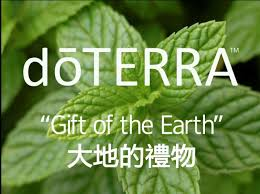

<!DOCTYPE html>
<html lang="en">
    <head>
        <meta charset="utf-8" />
        <title>多特瑞精油</title>
    </head>
   
<body background="002.jpg"></body>
    <hr>
     
    <i><strong> <a href="CPTG認證.html"><font color=red>CPTG認證精油</font></a></i></strong>
    <i><strong> <a href="家庭醫生組.html"><font color=red>家庭醫生套組</font></a></i></strong>
   <i><strong> <a href="芳香魔法噴霧DIY.html"><font color=red>芳香魔法噴霧DIY</font></a></i></strong>
        <audio src="天使療癒.mp3"autoplay></audio>


     <hr>
    </body>
    <!DOCTYPE html>

<html>
    <head>
        <meta charset="utf-8">
        <title>Ch04-10</title>
    </head>
    <body>
      <!DOCTYPE html>

<html>
    <head>
        <meta charset="utf-8">
        <title>Ch04-10</title>
    </head>
    <body>
       <strong><caption><h3><mark><font size="5">精油是什麼?</caption></h3></mark>

<strong><font size="4">任何人只要有機會嗅嗅玫瑰花，就已經體驗到精油芳香的奇妙特質了。精油是一種自然萃取物，它是從種子、樹皮、樹幹和其他部位中提煉而成。精油不但提供保護植物不受蟲害侵入的特質，並在花粉的傳授上擔任重要的角色。<p> 除了對植物本身固有的利益和帶給人類芳香的氣味之外，精油一直廣泛利用於食物，美容，以及保健養生。

<caption><h3><mark><font size="5">應如何使用精油？</h3></caption></mark>

<font size="4">精油可廣泛應用於情緒和身體上。它們可用於單方或複方使用，通常有下列使用用法：
 
<p><strong><em><font size="5"><font color=purple>芳香療法</font></p></strong></em>

<font size="4">如果把精油噴灑在空氣中，有些精油能振奮我們的情緖，有些則能讓人穩定心神。噴灑精油還能幫助淨化需要的部位，去除令人不悅的氣味和空氣中的病原體。
 
<p><strong><em><font size="5"><font color=purple>局部塗抹療法</font></p></strong></em>

<font size="4">精油容易被皮膚吸收，而且可以安心地局部塗抹於皮膚上。</strong>

<P><table width=80%  align=center border=1 bordercolor=#006633 cellspacing=0 class=text>
<tr align=center bgcolor=#ff88ff >
    <th width=30% height=45><font size="5">名稱</th>
    <th width=60% height=45><font size="5">網址</th>
</tr> 
   
<tr valign=top bgcolor=#eeffff>
<td>什麼是精油</td>
<td><a href="https://www.youtube.com/watch?v=4-m5sSFFwZY">https://www.youtube.com/watch?v=4-m5sSFFwZY</a></td>
</tr>

<tr valign=top bgcolor=#eeffff>
<td>CPTG專業純正調理級認證精油 </td>
<td><a href="https://www.youtube.com/watch?v=o2_JUdx7FXA">https://www.youtube.com/watch?v=o2_JUdx7FXA</a></td></tr>
    
<tr valign=top bgcolor=#eeffff>
<td >家庭醫生組 </td>
<td ><a href="https://www.youtube.com/watch?v=GI68t-ZHHUY&list=PL1YPhokux5D1TTtzMlcrHzvlElg15lU6T"> 
      https://www.youtube.com/watch?v=GI68t-ZHHUY&list=PL1YPhokux5D1TTtzMlcrHzvlElg15lU6T</a></td>
     
<tr valign=top bgcolor=#eeffff>
<td >精油達人在我家</td>
<td><a href="https://www.youtube.com/watch?v=e6VIPQhA-Wg">https://www.youtube.com/watch?v=e6VIPQhA-Wg</a></td>
</tr>

</table>

 


                   </table>
       </table> 
    </body>
</html>

    </body>
</html>

</html>


